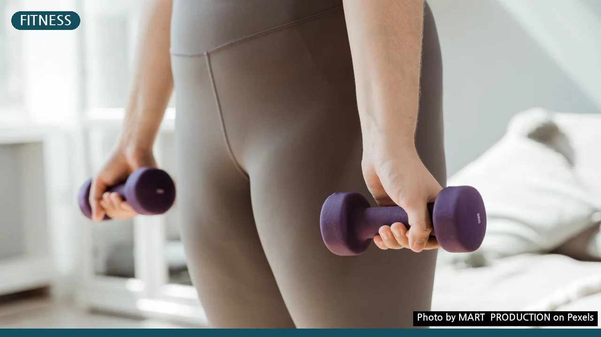
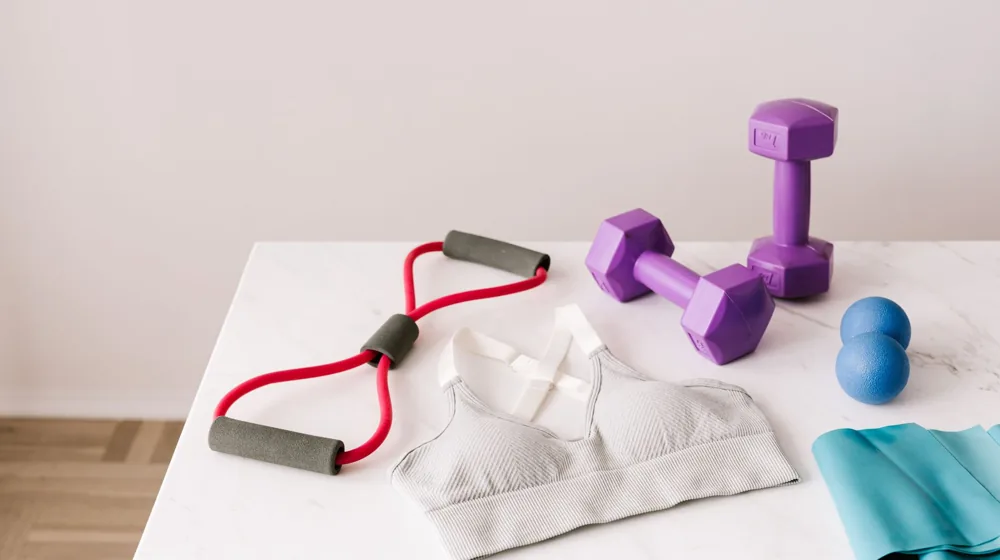

후회 없는 홈트 선택: 실패 줄이는 5가지 핵심 체크리스트
사진: MART PRODUCTION / Pexels (무료 이미지, 출처 표기)
홈트레이닝, 나에게 맞는 운동 목표와 방식 정하기

홈트레이닝 장비를 고르기 전에 가장 먼저 할 일은 바로 자신의 운동 목표를 명확히 하는 것입니다. 단순히 살을 빼고 싶다는 막연한 목표보다는, '체지방 5kg 감량', '근력 증가로 어깨 통증 완화', '유연성 향상으로 자세 교정' 등 구체적인 목표를 세워야 합니다.
목표에 따라 필요한 운동 방식과 장비가 달라지기 때문입니다. 유산소 운동이 주 목적이라면 러닝머신이나 사이클이 효과적이며, 근력 운동을 원한다면 덤벨, 케틀벨, 튜빙 밴드 등이 필요합니다. 유연성과 자세 교정에는 요가 매트, 폼롤러, 필라테스 링 등이 유용합니다.
제한된 공간, 층간 소음 문제 현명하게 해결하기
집에서 운동할 때 가장 큰 제약은 공간과 층간 소음입니다. 장비를 구매하기 전에 운동할 공간의 크기를 정확히 측정하고, 평소 어떤 시간에 운동할지 고려해야 합니다. 특히 아파트나 다세대 주택에 거주한다면 층간 소음 문제는 미리 대비하는 것이 좋습니다.
좁은 공간에서는 접이식 러닝머신, 문틀 철봉, 공간 효율적인 밴드나 매트 등이 좋은 선택입니다. 층간 소음이 걱정된다면 고강도 점프 운동보다는 저충격 유산소 운동(사이클, 스텝퍼)이나 진동 흡수력이 좋은 두꺼운 운동 매트를 사용하는 것이 현명합니다. 이웃과의 분쟁을 막기 위해 운동 시간을 조절하는 것도 중요합니다.
초보자를 위한 필수 홈트 장비 추천 및 효율적인 조합
처음 홈트레이닝을 시작한다면 무리하게 비싼 장비부터 구매하기보다는, 기본적인 아이템으로 시작해 점차 늘려가는 것이 좋습니다. 예산과 운동 목표에 맞춰 효율적으로 장비를 조합하는 것이 중요합니다.
안전과 내구성, 장비 구매 전 필수 확인사항
운동 장비는 안전과 직결되므로 구매 전 꼼꼼히 확인해야 합니다. 저렴한 가격에 현혹되기보다는 제품의 재질, 마감 처리, 최대 하중 등을 확인하여 내구성이 검증된 제품을 선택하는 것이 중요합니다.
- 안전 인증: 국내 제품의 경우 KS 마크 등 공신력 있는 안전 인증 마크가 있는지 확인하세요. 해외 직구 제품은 CE, UL 등 해당 국가의 안전 기준을 충족하는지 살펴보는 것이 좋습니다.
- 내구성: 조립 부위가 튼튼한지, 용접이나 마감이 깔끔한지 육안으로 확인하고, 제품 설명서에 명시된 최대 사용자 체중을 반드시 지켜야 합니다.
- AS 정책: 만약의 고장에 대비해 제조사의 A/S(사후 서비스) 정책과 기간을 확인하는 것도 중요합니다. 특히 고가 장비일수록 서비스 정책을 미리 파악해두세요.
꾸준한 홈트레이닝을 위한 루틴 설정과 동기 부여 팁
아무리 좋은 장비를 구매했더라도 꾸준히 운동하지 않으면 소용이 없습니다. 홈트레이닝의 성공은 장비보다 '지속 가능성'에 달려 있습니다. 처음부터 무리한 목표를 세우기보다는 현실적인 루틴을 만들고 작은 성취감을 쌓아가는 것이 중요합니다.
주 3회, 30분 운동처럼 실현 가능한 목표를 설정하고, 매일 운동 일지를 작성하여 자신의 성장 과정을 기록해 보세요. 온라인 피트니스 앱이나 유튜브 채널의 가이드 영상을 활용하는 것도 좋은 방법입니다. 2026년 10월 11일 기준으로 다양한 무료 콘텐츠가 제공되므로 자신에게 맞는 프로그램을 찾아보세요. 또한, 운동 전후 스트레칭은 부상 방지와 피로 회복에 필수적이므로 꼭 실천하시길 권장합니다.
🔗 이 글도 함께 보면 좋아요: 종택 숙박, 후회 없는 선택을 위한 5가지 체크리스트
관련 추천 상품
홈트레이닝 기구, 운동 매트, 튜빙 밴드 관련 인기 상품 보러가기
이 포스팅은 쿠팡 파트너스 활동의 일환으로, 이에 따른 일정액의 수수료를 제공받습니다.